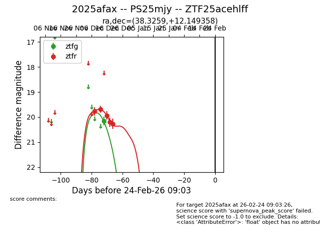
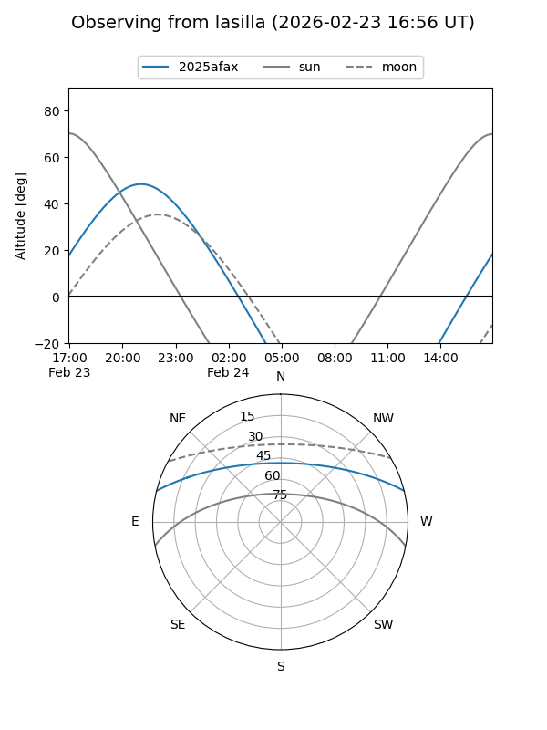
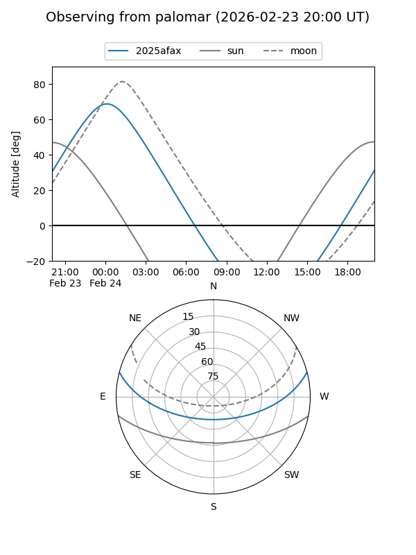

2025afax
Target 2025afax at 2025-12-20 04:39
Aliases and brokers:
FINK: fink-portal.org/ZTF25acehlff
Lasair: lasair-ztf.lsst.ac.uk/objects/ZTF25acehlff
ALeRCE: alerce.online/object/ZTF25acehlff
TNS: wis-tns.org/object/2025afax
YSE: ziggy.ucolick.org/yse/transient_detail/2025afax
alt names
ZTF25acehlff (ztf,fink_ztf)
2025afax (tns,yse)
Coordinates:
equatorial (ra, dec) = 38.3259,+12.14936
equatorial (HMS+DMS) = 02:33:18.23,+12:08:57.69
galactic (l, b) = (158.4111,-43.59455)
Flags:
Photometry:
last ztfg=20.17, ztfr=20.27
1 ztfg, 5 ztfr detections
Lightcurve

Visibility


Additional plots